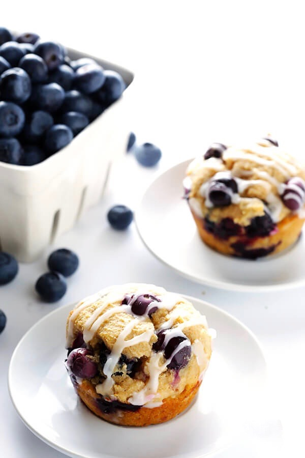

Ingredients
- 1 1/2 cups all-purpose flour
- 3/4 cup brown sugar
- 1/2 teaspoon salt
- 2 teaspoon baking powder
- 1/3 cup vegetable oil
- 1 egg
- 1/3 cup of milk
- 1 cup fresh blueberries
Directions
- Preheat oven to 400 degrees F.
- Grease muffin cups or line with muffin liners.
- Combine 1 1/2 cups flour, 3/4 cup sugar, salt and baking powder.
- Place vegetable oil into a 1 cup measuring cup; add the egg and enough milk to fill the cup. Mix this with flour mixture. Fold in blueberries.
- Fill muffin cups right to the top, and sprinkle with crumb topping mixture.